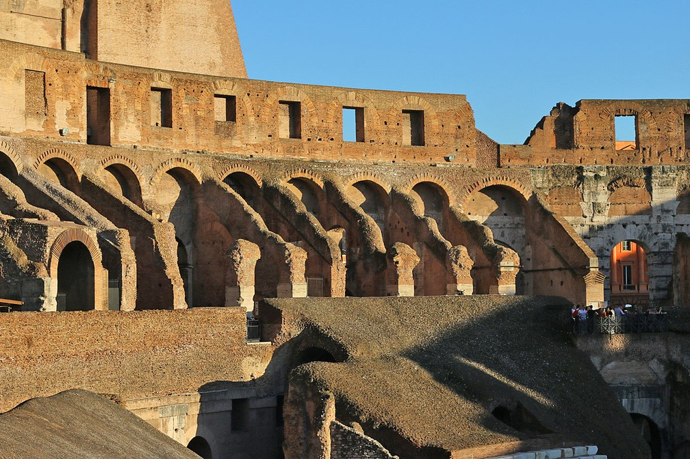
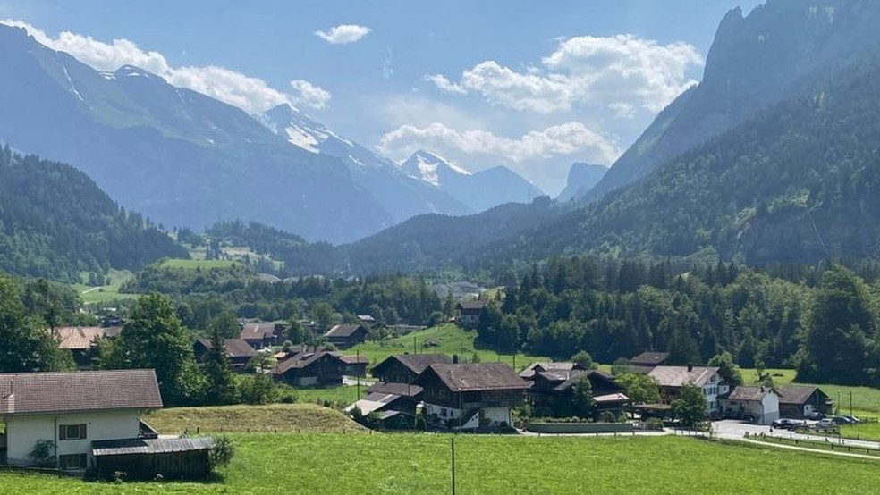
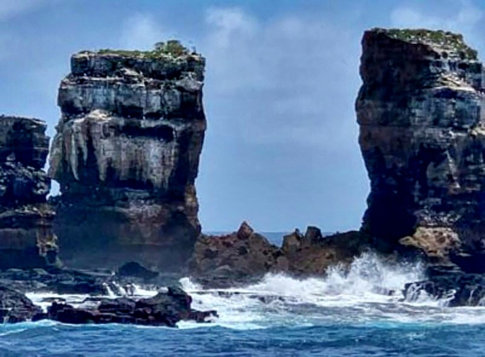
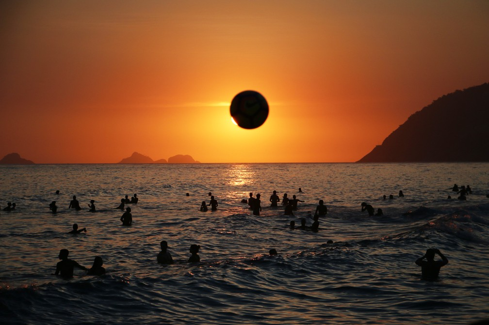

Turistas são multados por entrar no Coliseu de Roma à noite para beber
Dois americanos de 24 e 25 anos escalaram os muros do famoso anfiteatro. Cada um foi autuado em R$ 4.969.
As maravilhas arquitetônicas da milenar 'Manhattan do deserto'
Construídos com materiais naturais, os arranha-céus iemenitas se adaptam perfeitamente ao clima quente e seco do deserto árabe.
A 'bomba-relógio' que ameaça vilarejo idílico nas montanhas da Suíça
Mais de 60 anos depois de uma explosão que causou destruição total, passado trágico de Mitholz volta a assombrá-lo.
Arco de Darwin, formação rochosa em Galápagos, sofre erosão e desmorona
Processo de desgaste foi natural, diz Ministério do Meio Ambiente. Agora, restam apenas dois pilares.
Rio tem 4º pôr do sol mais bonito do mundo e é o mais postado em rede social, aponta pesquisa
Cidade só fica atrás de Santorini, Bali e Havaí, segundo levantamento do site Bounce, que analisa recomendações de blogs e artigos e posts no Instagram.
Como é Songdo, a 'cidade do futuro' criada do zero na Coreia do Sul
A 40 quilômetros da capital coreana, uma cidade conta com as mais avançadas tecnologias de habitação e planejamento urbano.